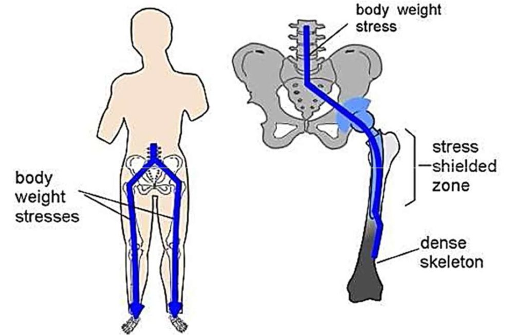
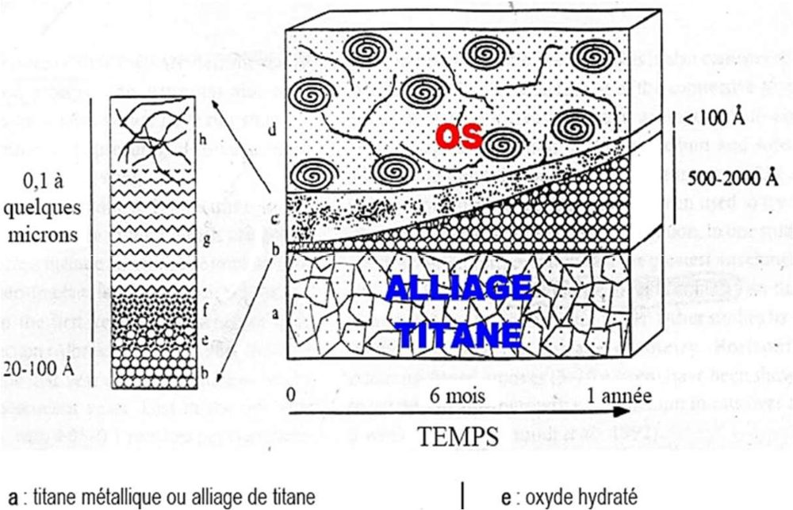

Le titane et ses alliages
Une tige de hanche trop rigide porte le poids du corps à la place de l'os. L'os, qui n'est plus sollicité, s'affaiblit autour d'elle. Il faudrait un métal solide, mais le plus souple possible. C'est la place du titane.
Intuition
Un os travaille comme un muscle : sollicité, il se densifie ; au repos, il perd de sa densité. Quand on met une tige métallique dans le fémur, l'os et la tige se partagent la charge, et c'est le plus rigide qui en prend le plus. Avec un module trois fois plus proche de celui de l'os que l'acier, le titane laisse davantage travailler l'os.
Formalisation
Le titane est l'un des métaux les plus biocompatibles, avec l'or et le platine : il résiste totalement aux fluides corporels. Il a une haute résistance mécanique et un module d'élasticité très bas, de 100 à 110 GPa, plus proche de celui de l'os (20 GPa) que l'acier inox (210 GPa). Il est plus léger mais moins rigide que l'alliage CoCr et l'inox. Il n'est pas source d'artefact d'IRM.
Le stress-shielding (saut de contrainte) : la prothèse absorbe les contraintes, ce qui provoque une ostéoporose (diminution de la densité de l'os) localisée autour d'elle. Le faible module du titane permet une meilleure diffusion des contraintes dans l'os et diminue les risques de fragilisation de l'os. Remarque : la diapositive écrit « un os sous contrainte va se densifier (diminution de sa densité) » ; il faut lire qu'un os sous contrainte se densifie, et qu'un os privé de contrainte perd de sa densité.

Les alliages
| Alliage | Intérêt |
|---|---|
| TiAl6V4 (TA6V) | le plus utilisé en biomédical (tiges de hanche, prothèse tibiale) ; peut relarguer du vanadium, toxique |
| Ti-6Al-7Nb | propriétés semblables au TA6V, meilleure résistance à la corrosion |
| Ti-5Al-2,5Fe | électrodes de pacemakers, grâce à la qualité du signal |
| Ti-13Nb-13Zr | implants orthopédiques : module plus faible que le TA6V |
| Ti-15Mo-3Nb | implants orthopédiques : grande résistance, faible module, sans Al ni V |
Propriétés chimiques : excellente résistance à la corrosion, assurée par une couche de passivation de \(\mathrm{TiO_2}\) ; inertie chimique. Cette couche résiste très bien aux ions chlorure et isole le métal du milieu ; en partie détruite par des attaques chimiques ou mécaniques, elle se reforme de façon dynamique. Propriétés biologiques : biocompatible, ostéo-intégration (aptitude à être colonisé par les cellules vivantes). Propriétés mécaniques : module et densité plus proches de l'os que le 316L et le CoCr, très résistant, propriétés qui dépendent des éléments d'alliage et des traitements thermomécaniques.

Point faible : à cause de sa mauvaise résistance à l'usure, le titane n'est plus utilisé en couple de friction.
Traitements de surface : anodisation, dépôts d'hydroxyapatite et de titane, implantation ionique (on implante les ions d'un matériau dans un autre). Ils visent à accroître la résistance à l'usure, à la fatigue, à la corrosion, prévenir l'infection, favoriser l'intégration biologique, accroître la tenue en service et la biocompatibilité. (La diapositive développe « HAP » en hydrocarbures aromatiques polycycliques ; pour un implant, HAP désigne l'hydroxyapatite.)
Applications : implants dentaires, prothèse de côtes expansible, tiges de hanche en TiAl6V4, prothèse tibiale en Ti6Al4V, systèmes de fixation (tiges, plaques, vis, clous).


Exemple
Modèle ajouté, très simplifié : l'os et la tige, de même section, s'allongent de la même quantité (comme deux ressorts en parallèle). La part de la charge portée par l'os vaut alors \(E_{os} / (E_{os} + E_{tige})\). Avec une tige en inox (210 GPa) : \(20 / 230 \approx 8{,}7\) %. Avec une tige en titane (110 GPa) : \(20 / 130 \approx 15{,}4\) %. L'os porte presque deux fois plus avec le titane : moins de stress-shielding.
Formules clés
E du titane : 100 à 110 GPa ; os : 20 GPa ; inox : 210 GPa.
\[\text{part portée par l'os} = \frac{E_{os}}{E_{os} + E_{tige}} \quad \text{(modèle ajouté, même section, même allongement)}\]
Couche de \(\mathrm{TiO_2}\) qui se reforme ; ostéo-intégration ; pas d'artefact IRM ; mauvaise usure, donc pas de couple de friction.
TA6V le plus courant (risque de vanadium) ; Ti-6Al-7Nb, Ti-13Nb-13Zr, Ti-15Mo-3Nb sans vanadium.